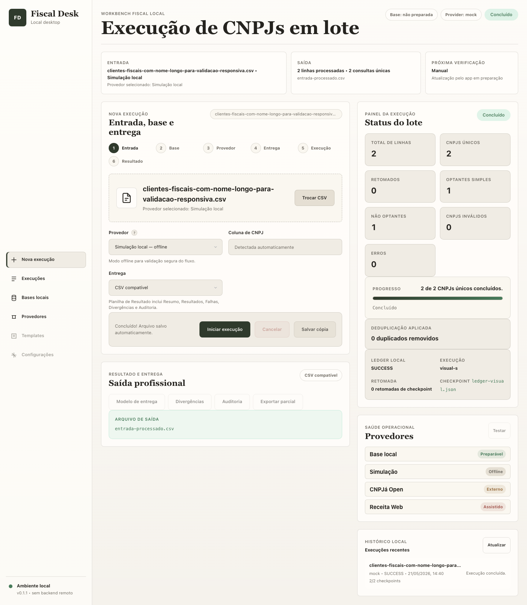
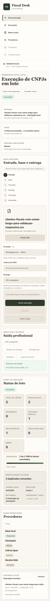

Cockpit operacional
Fondo, Glean e dashboards fiscais apontam para status, histórico, ações e métricas sempre visíveis. Não é uma home editorial.
Conceito corrigido
A direção agora combina cockpit operacional, orientação de fluxo e acabamento premium sem cards ornamentais: divisões sutis, botões outline/ghost, KPIs em faixas e estados de app Electron.
LazyWeb cruzado com o produto
Fondo, Glean e dashboards fiscais apontam para status, histórico, ações e métricas sempre visíveis. Não é uma home editorial.
Chameleon e OneSchema servem para o fluxo de upload, mapeamento e revisão, mas como parte do workbench.
Windmill, Cockroach jobs e operações similares indicam fila, progresso, eventos, erros e saída parcial.
Tabelas densas são necessárias para revisão e resultado. Premium aqui é legibilidade, não vazio.
Rippling e Remote ajudam na sidebar, navegação persistente e shell de produto multi-módulo.
Comando rápido é útil, mas não pode apagar painel, fila e operação. Deve virar atalho, não tela principal.
Comparação
A tela atual funciona, mas ainda precisa consolidar informação operacional e reduzir aparência de composição genérica.


Novas imagens
Refinamento da tela inicial escolhida. Mantém painel, fila, histórico e log, mas troca cards preenchidos por contornos, faixas KPI e divisores sutis.
Estado pós-upload com tabela densa e orientação lateral, preservando o mesmo padrão cardless e botões de contorno.
Estado de execução com lotes, progresso, eventos e saída parcial. Mantém densidade operacional com superfícies abertas.
Base aprovada
Melhor candidata para tela inicial. Mostra entrada, fila, métricas, últimas execuções, saída e log no mesmo shell.
Melhor para o momento depois do upload: tabela central, configuração lateral, métricas e decisão de executar.
Melhor para execução em andamento: lista de lotes, progresso, timeline, eventos, saída parcial e ações de controle.
Recomendação
Usar A como shell principal do app.
Usar B como estado de revisão dentro do shell.
Usar C como estado de monitoramento e logs.
{kind=link}
{kind=link}
{kind=link}
{kind=link}
{kind=link}
{kind=link}
{kind=link}
{kind=link}
{kind=link}
{kind=link}
{kind=link}
{kind=link}